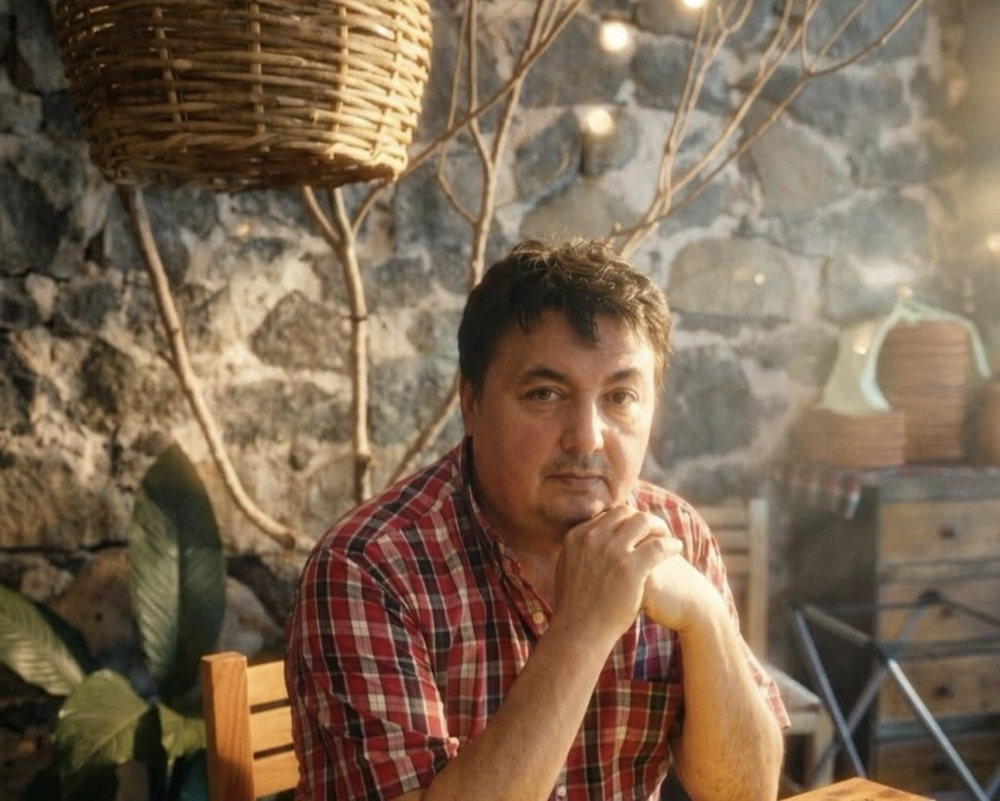

Un referente de consultoría ambiental en el Sur de México
Alto nivel de exigencia técnica, trato honesto y cercano. Así trabajamos cada proyecto de iniciativa privada, ayuntamiento u organismo operador, en cualquier parte del país.
Alto nivel de exigencia técnica, trato honesto y cercano. Así trabajamos cada proyecto de iniciativa privada, ayuntamiento u organismo operador, en cualquier parte del país.

El responsable
Dirige Gestión Natura, el área ambiental de Grupo Novac (MMIC), dedicada a estudios básicos para proyectos de ingeniería civil, ambiental y sanitaria. Su equipo suma más de 20 años de experiencia operativa en el diseño e implementación de estos proyectos a nivel nacional.
Combina el rigor que exigen SEMARNAT, PROFEPA y los gobiernos con una atención honesta y discreta. De un estudio de prefactibilidad a la puesta en marcha de un relleno sanitario, acompaña cada proyecto de principio a fin.
"Atención profesional, honesta y discreta."
Qué nos distingue
Cuéntanos qué necesitas y te orientamos con honestidad sobre el camino más conveniente.